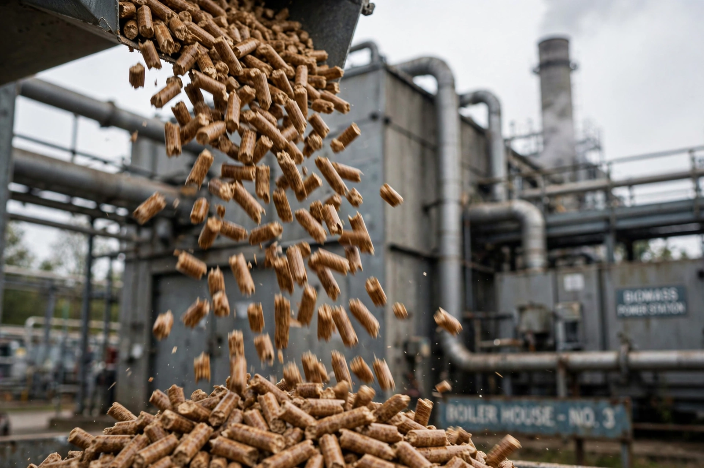

Biomass

Biomass is biological material from living or recently living organisms, used as fuel, feedstock or material. As an energy source it spans firewood gathered for cooking, through wood pellets burned in power stations, to biogas from manure and bioethanol and biodiesel refined for vehicles.
Biomass is the world's oldest fuel and still one of its largest sources of {L('Renewable_energy')}, though its sustainability depends entirely on how it is produced.
Forms and uses
Traditional biomass — wood, charcoal, dung and crop residues burned for heat and cooking — remains the primary energy source for billions of people, with serious health costs from indoor smoke. Modern bioenergy includes dedicated energy crops, forestry and agricultural residues, landfill gas and anaerobic digestion of wastes, and liquid biofuels: Brazil's sugarcane ethanol and US corn ethanol programmes are the largest transport examples.
Burning biomass releases the CO₂ the plants recently absorbed, so it can be near carbon-neutral if regrowth keeps pace; but clearing forests for energy crops, or slow regrowth after whole-tree harvest, can make it worse than fossil fuels for decades. Accounting rules for this are fiercely debated.
Sustainability debate
Critics highlight competition with food production and Biodiversity, and the air pollution of wood smoke; supporters counter that residues and wastes are a genuinely circular resource and that bioenergy with carbon capture could deliver 'negative emissions' valued in Climate change scenarios. Both positions agree the details of feedstock and timescale decide the verdict.
See also: Renewable energy · Fossil fuel · Deforestation · Climate change · Ethanol